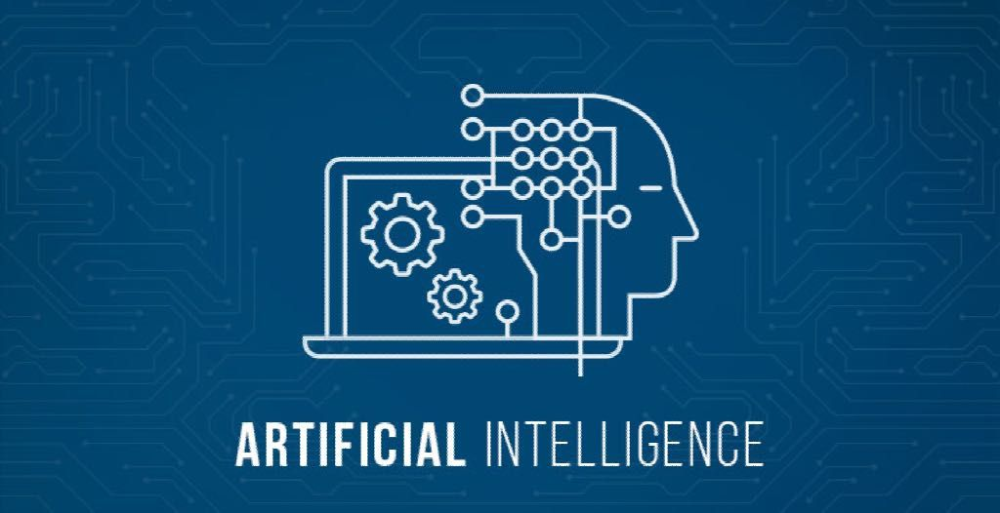

Ai and Web dev.
Web app development has evolved from simple text-based web pages to include a variety of attractive audio and visual elements. From animations and typography to eye-catching designs, websites are now more than just a medium of information, they are a reflection of a company’s personality. As the internet gets more accessible and users spend time on the web for virtually everything, website development is making a pronounced shift towards improving the user interface.